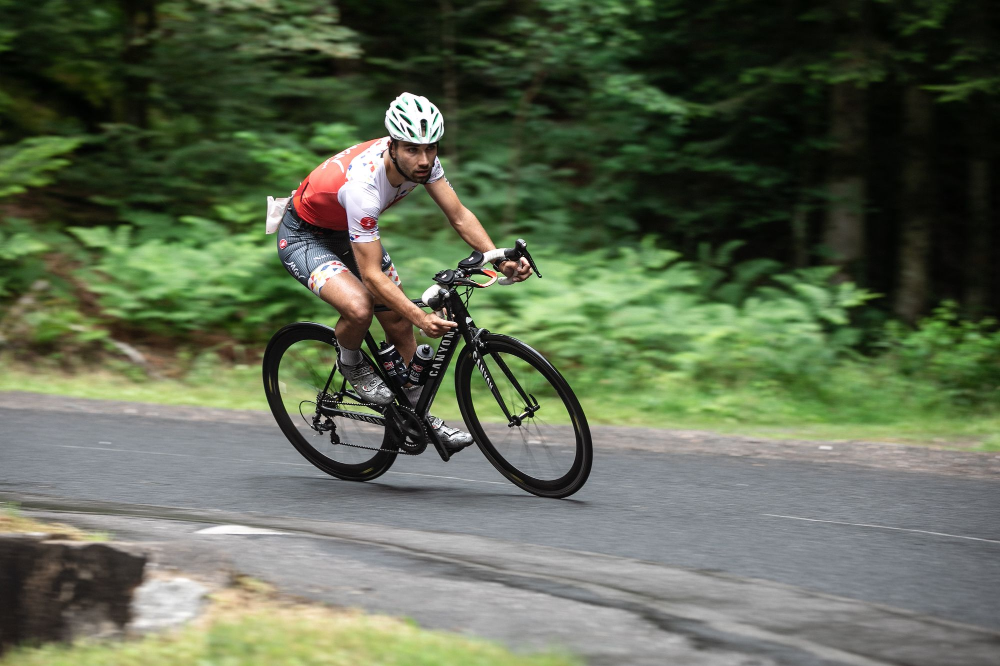

Parcours · 80 KM* Le Donon pour dessert.
Trois cols, 1 174 m de D+ et le Donon au km 58. La version courte, pas la version plate.
80 KM*
Deux cols pour se mettre en jambes, puis le Donon au km 58 avant de redescendre vers l'arrivée. 80 km qui ne laissent pas beaucoup de plat.
- Distance exacte
- 80,5 km
- Dénivelé positif
- 1 174 m
- Dénivelé négatif
- 1 172 m
- Point haut
- 783 mau km 56,0
- Point bas
- 300 m
- Départ
- 9hUne heure après le 145 KM***
Carte & profil
Ouvrir sur OpenRunner →Survolez ou touchez le profil pour suivre le parcours sur la carte
Ce qui vous attend là-haut.
Trois cols répertoriés sur le tracé. Le Donon arrive en dernier : gardez-en un peu.

- Col de la Vierge Clarissekm 8,6484 m
- Col des Charbonnierskm 20,7465 m
- Col du Dononkm 58,4727 m
Pour qui ?
Pour celles et ceux qui roulent régulièrement et veulent des cols sans y passer la journée. 80 km et 1 174 m de D+ : ça se prépare, et ça se savoure.
Ravitaillements
Nombre et emplacements des ravitaillements : À venir Ils seront reportés sur la carte dès qu'ils sont fixés.
Chrono & circulation
Épreuve chronométrée, sur routes ouvertes à la circulation avec priorités de passage. Temps limite : À venir Le détail sera dans le règlement.
Envie d'en voir plus ? Le 145 KM*** ajoute trois cols et 67 km.
Le 80 KM* vous tente ?
Dimanche 5 septembre 2027, départ à 9h. Inscriptions dès le 8 décembre 2026 - 20h.